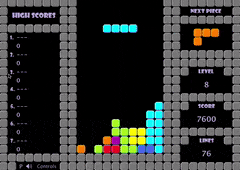

Final Project
My Final Project Idea! Tetris!
Draft submited by Chris Sprys, 11/5/2020 Application:Retro Tetris with Python

How am I gonna do it?
Using the Python guide
How to build your own Tetris game
Updates and progress!
- Date Propsal:11/5/2020
- Sprint 5
- Using Python
- Hit ditection and movement of blocks hope to ahcomplish with time allowed
- Adding of sounds, more color and complex if had more time allowed
- Usage of importaning code, and functions learn in class
- Expanding knowledge of Python programming with user input
Created by Chris Sprys